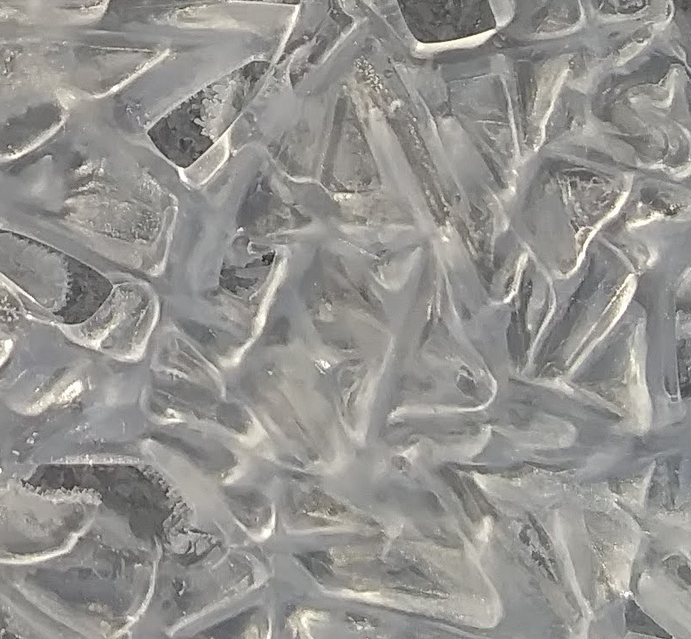
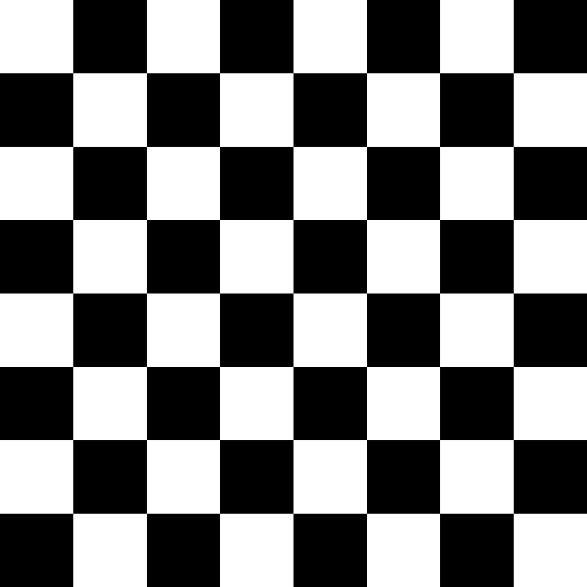
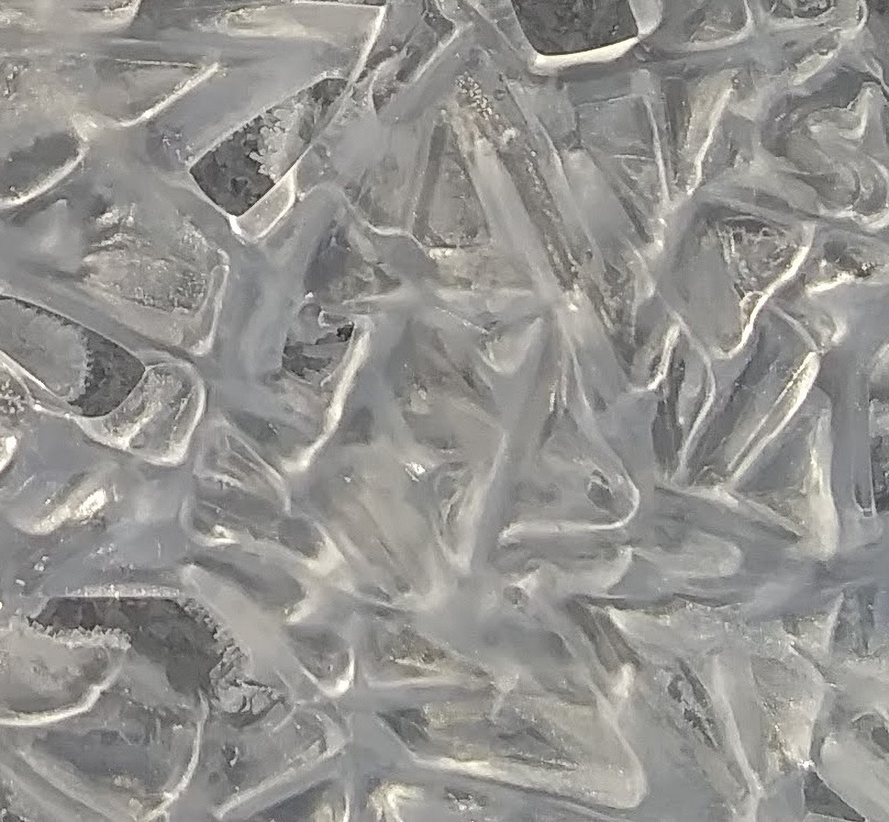
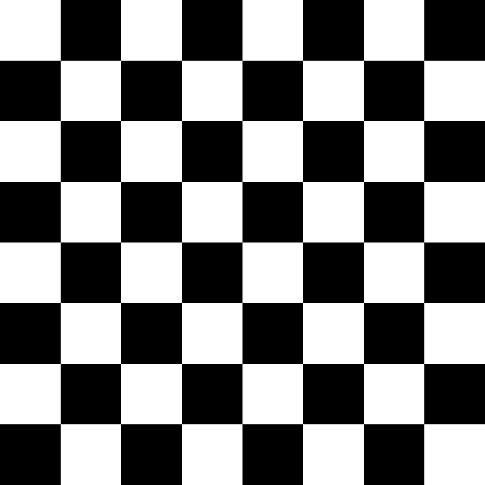

Complexity:
A higher complexity give the chance that the function used to generate the image is more complicated and will have more and smaller details.
Symmetry: A choice of "None" on symmetry will not force the image to be symmetric; however, it may still end up with some symmetry because of the underlying functions.
A choice of "A little" will generate a picture so that the left and right halves are mirror images of each other.
A choice of "More" will generate an image which is composed of one square (corner) repeated four times.
A choice of "A lot" will generate an image which is composed of one triangle repeated eight times.
Edge avoidance: With "None" the image will be generated with no consideration of the edge of the canvas.
Patterns may extend off of the canvas. A choice of 2 will restrict most of the interesting portions of the image to a circle. Higher
numbers will generate "squircles" which get closer and closer to a square.
Focus: The focus options will move the center of the image up/down and left/right. This has the most visible effect when there is some imposed symmetry.
Sometimes, it may seem like the algorithm is stuck in an unimpressive groove. This is merely psychological, but
if it makes you feel better, you can click this button to restart the randomization process.
If you are tired of clicking the generate button over and over, you can click the Shotgun button.
This will generate several images at a time and add them to the bottom of the page.
Click on the one you want, and the seed for that image will be copied to the Next Seed input above.
Do not do this unless you mean it. This image is slower to generate. Note, the image above will not change size. When the high resolution image is generated, you will receive a notice. When you download the image above, you will receive a larger version.
Next Seed:
The mapping from the canvas to the seed image used to select colors is determined by a unique number. This
unique number is usually determined randomly, but you can type one in here if you have already determined a mapping you like. Either way, click the button to generate an image.
Last Seed:
This is the seed that was last used to generate an image. Sometimes, you may want to generate an image using the same
seed or color mapping after you have changed other options. Use this button for that.
 


